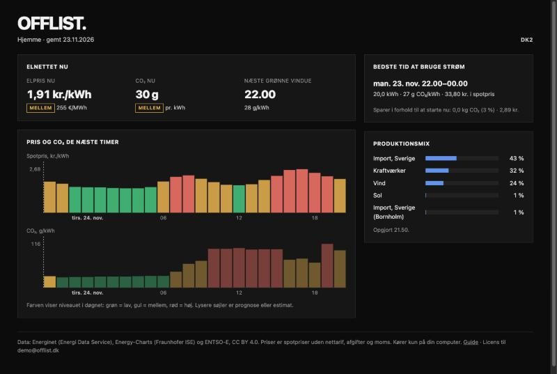

Offlist for Claude
Power price, CO₂ and your own EV in Claude, with a dashboard you build by asking. An extension for Claude Desktop from OFFLIST. It runs on your own computer.

Price: 50 kr. or €6.60, one-time. No subscription. Buy in kroner · Buy in euro
Dansk version længere nede: På dansk.
What you can ask
- "What does power cost right now, and how green is it?"
- "When is it greenest to run the dishwasher today?"
- "When should the car charge to reach 80 % by 7 am, as green as possible?"
- "How much CO₂ did last night's charge emit, and what would the greenest time have given?"
- "How many times did I charge this month, and how far did I drive?"
- "Build a dashboard for me with power and my car."
What it does
Power, hour by hour
- Spot price and CO₂ now, and up to 48 hours ahead, with each hour marked low, medium or high for the day.
- The greenest or cheapest time to use a given amount of power, such as charging, the dishwasher or the laundry.
- CO₂ for a charge that has happened, using the grid's CO₂ in exactly those hours.
- Where the power comes from right now: wind, solar, power plants, imports.
- Price and CO₂ across Europe in up to 20 areas.
Your own EV (through your own Smartcar app)
- Battery, range, charging status and odometer, read directly from the car. Location is never read.
- A charge plan that reaches your target as green or as cheap as possible.
- History: every charge with kWh and CO₂, and km driven. It is collected around the clock by your own free collector on Cloudflare, also while your computer is off.
Your dashboard
- Eight of OFFLIST's dashboard modules, which you combine just by asking Claude. Save up to 10 dashboards.
- It runs on your computer at
localhost, and nothing is sent to OFFLIST.
Where the data comes from
| Area | Source | Key |
|---|---|---|
| Denmark (DK1, DK2) | Energinet, Energi Data Service | None |
| Germany, Poland, Netherlands, Belgium, France, Italy, Switzerland, Austria | Energy-Charts (Fraunhofer ISE) | None |
| Sweden, Norway, Finland, flows between countries | ENTSO-E | Your own free key |
| Your car | Smartcar | Your own Smartcar app |
Prices are spot prices without grid tariffs, taxes and VAT.
Requirements
- Claude Desktop on Mac or Windows.
- For the car: your own app at Smartcar. Smartcar charges per connected car, so you pay Smartcar directly. You can try everything with Smartcar's simulated cars first.
- For the car's history: a free Cloudflare account for your collector.
Local or hosted?
| Offlist for Claude | Hosted OFFLIST | |
|---|---|---|
| Price | 50 kr. / €6.60 one-time | 39 kr. per month |
| Where | Claude Desktop on your computer | offlist.dk in any browser |
| Car | Your own Smartcar app | Included |
| History | With your own collector | Included |
How it works
- Buy: You buy once. Right after payment you get the file, a personal licence key and a link by email.
- Install: Double-click the file to install it in Claude Desktop, then paste the key.
- Ask: Ask Claude.
The guide (in Danish) covers installation, the Nordics and connecting your car.
The licence is personal: the key carries the buyer's email, which is shown on the dashboard. This repository has no source code. Offlist for Claude is closed source.
Questions: contact.offlist@gmail.com
På dansk
Elpris, CO₂ og din egen elbil i Claude, med et dashboard du bygger ved at spørge. En udvidelse til Claude Desktop fra OFFLIST. Den kører på din egen computer.
Pris: 50 kr. én gang. Intet abonnement. Køb på offlist.dk
Det kan du:
- Strøm: Elpris og CO₂ nu og op til 48 timer frem, time for time.
- Bedste tid: Den grønneste eller billigste tid til opvask, vask eller ladning.
- CO₂ for en ladning: Udregnet ud fra elnettets CO₂ i præcis de timer, bilen ladede.
- Produktionsmix og Europa: Hvor strømmen kommer fra lige nu, og pris og CO₂ i op til 20 områder.
- Din elbil: Batteri, rækkevidde og en ladeplan via din egen Smartcar-app. Bilens position læses aldrig.
- Bilens historik: Ladninger, kWh, CO₂ og kilometer, samlet døgnet rundt af din egen gratis opsamler på Cloudflare.
- Dit dashboard: Otte af OFFLISTs moduler, som du sætter sammen bare ved at spørge Claude.
Datakilder:
- Danmark: Energinet. Ingen nøgle.
- 8 andre lande: Energy-Charts. Ingen nøgle.
- Norden: ENTSO-E, med din egen gratis nøgle.
Priserne er spotpriser uden nettarif, afgifter og moms.
Kræver: Claude Desktop på Mac eller Windows. Til bilen skal du have din egen Smartcar-app, og du betaler selv Smartcar.
Lokal eller hostet: Offlist for Claude koster 50 kr. én gang og kører på din computer. Den hostede OFFLIST på offlist.dk koster 39 kr. om måneden og har bilen og historikken med.
Guide: johanschnor.github.io/offlist-for-claude
Licensen er personlig. Dette repo indeholder ingen kildekode.
Spørgsmål: contact.offlist@gmail.com